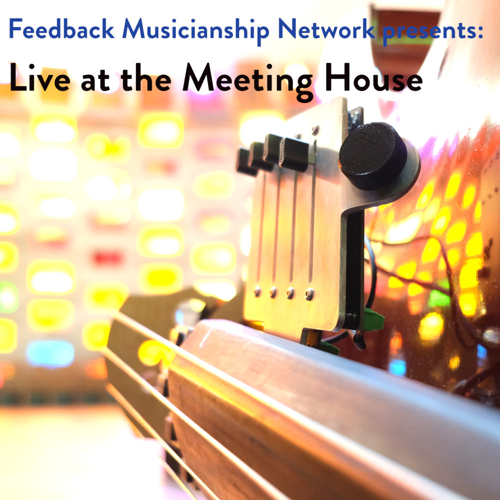

Feedback Musicianship Network presents:
Live at the Meeting House
Listen / download from streaming services.

Live at the Meeting House is a recording of a concert at a Feedback Musicianship Network meeting, on May 12th 2022, University of Sussex, UK
More details about the concert can be found here
Track listing:
- Tom Davis (Feral cello) Laura Reid (cello + live DSP): Duet [8:05]
- John Bowers: Khôra for Slapstick and Room Feedback [16:09]
- The Curious Feet Bags*: Bulldozer / Push Up / Bulldozer [15:08]
- The Curious Feet Bags: Motet (I am sitting in a resonance box) [17:08]
- Luigi Marino: Improvisation for feedback cymbals [18:19]
- Scott McLaughlin: Open-forms: for Feedback Contra-alto Clarinet [14:38]
* The Curious Feet Bags: Performers: Tom Mudd, Paul Stapleton, Adam Pultz Melbye, Thanos Polymeneas-
Liontiris, Alice Eldridge, Dan Overholt, Chris Kiefer; Composer: Lars Kynde
Recorded by Jason Douglas.
Mixed and mastered at Jonathan Harvey Electronic Music Studio, University of Sussex by Jason Douglas and Chris Kiefer.
Photos by Dimitris Kyriskoudis.
With kind support from the Arts and Humanities Research Council, Danish Arts Foundation and Koda Kultur.